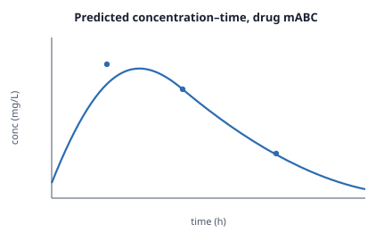
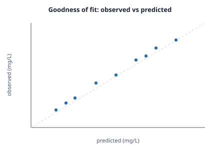
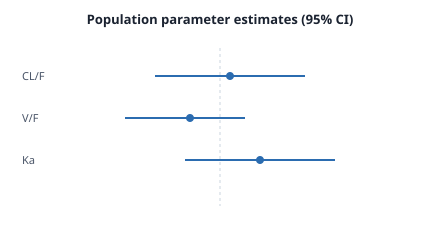
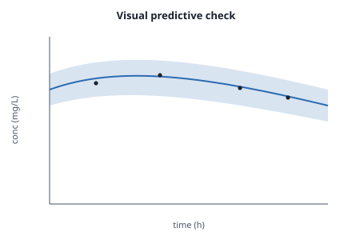

Population pharmacokinetics of drug mABC: base and covariate models, reproduced and reviewed
- Figures 1–2 descend from the base fit — and that fit carries QC's independent reproduction (a second colour on the graph).
- Figures 3–4 descend from the covariate (final) model — which carries the
reviewer's sign-off and its
model-role: final. - All four converge on one analysis dataset →
clean.R→ the raw data. In the viewer, switch ancestors / descendants / both and filter by participant to see it.
A one-compartment base model and a weight-on-clearance covariate model were fit to sparse concentration–time data for drug mABC. Diagnostics and predictive checks are shown below. None of it asks for trust: each figure's bytes re-hash to a recorded output, each producing record is signed, the base fit was independently reproduced, and the final model was reviewed — all visible by clicking the lens.
1. Base model — fit and goodness of fit


2. Covariate model — the final model

model-role: final.
3. Reproducibility
The base fit was re-run independently by QC; the recorded output matched byte-for-byte (an
L0 reproduction). The final model was accepted by the reviewer. Both attestations are
signed claims attached to the same graph nodes the figures descend from — open any lens and walk
to them.
lens-paper/data/); your own
connected planktons, if any, are consulted too — so you may see more, or less, than the author shipped.